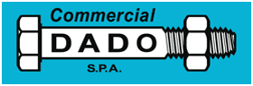
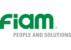

Officina Snella mira alla diffusione della conoscenza del Lean Thinking: Lean è miglioramento continuo ed efficienza produttiva. È un approccio manageriale che agisce non solo sui processi, ma soprattutto sulle persone.
In Officina Snella le persone sperimentano – in prima persona – l’impatto positivo delle tecniche Lean, diventando i primi promotori del change management. Ecco le aziende che ci sostengono e che condividono i nostri scopi!
Allmag S.r.l.Allmag S.r.l. dal 1974 si occupa di forniture industriali nel senso più ampio del termine. Da diversi anni ha integrato la sua gamma prodotti con componenti essenziali per la Lean Manufacturing quali tubi, rulli e giunti, più tutta una serie di accessori indispensabili per applicare una trasformazione lean all’interno dell’Azienda. |
|
 |
Commercial Dado S.p.a.Commercial Dado S.p.a. è un’azienda specializzata nella distribuzione e vendita in tutta Italia di prodotti di bulloneria, viteria, utensileria e articoli per l’antinfortunistica delle migliori marche: Usag, Hitachi, Fischer, 3M. Commercio all’ingrosso e minuto, pezzi a disegno, kit e kanban. |
 |
Fiam Utensili Pneumatici S.p.a.Fiam progetta e produce avvitatori pneumatici ed elettrici a controllo computerizzato, sistemi di automazione per l’assemblaggio, motori pneumatici nonchè utensili pneumatici. Punto di riferimento internazionale, Fiam è un Business Partner in grado di cogliere le esigenze del mercato e trasformarle in prodotti, anche personalizzati, la cui qualità, sicurezza ed affidabilità rappresentano ormai uno standard consolidato. |
|
iMilani S.r.l.iMilani nasce quale produttore specializzato di cassette e contenitori in plastica. Con oltre 50 anni di esperienza nel settore, iMilani si dedica alla clientela con linee di prodotti dedicate come “iMiCUBE”, una serie di cassette e contenitori ad ampio spettro di utilizzo, e “iMiLOG”, la gamma di contenitori destinati all’abbinamento con i sistemi automatici. |
|
|
KanbanBOX S.r.l.KanbanBOX è il primo software di kanban elettronico in Europa per la gestione dei materiali a kanban in produzione, vendita e acquisto. Per richiamare gli approvvigionamenti dai fornitori, gestire produzione e movimentazione interna o vendere con servizio a kanban. KanbanBOX riduce giacenze e costi di gestione del magazzino, elimina pericoli di rotture di stock, diminuisce il Lead Time e fornisce piena visibilità lungo la Supply Chain. |